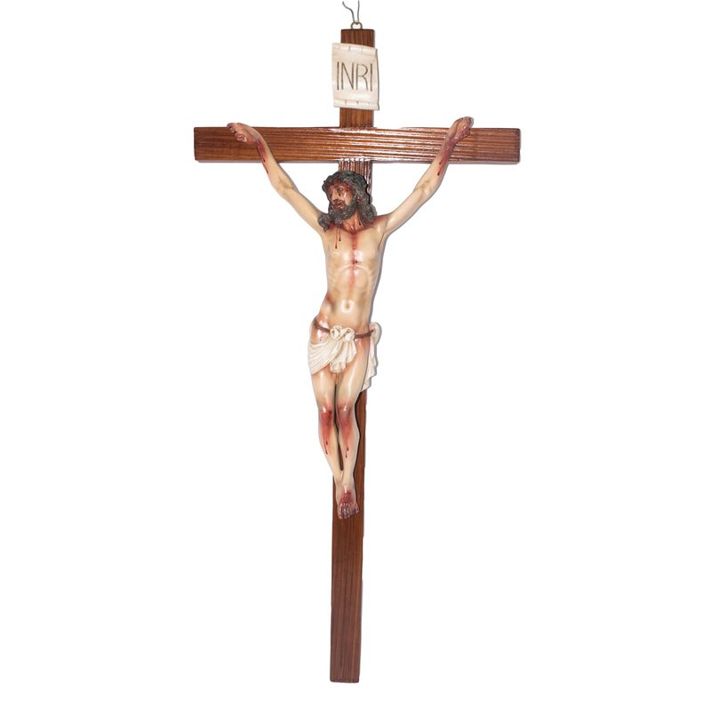

Cada pieza comienza con un boceto que define la postura, la expresión y el carácter de la obra.
El maestro artesano da forma al modelo maestro a mano, milímetro a milímetro.
Se crea un molde de precisión a partir del modelo original, para preservar cada detalle.
Cada pieza se funde de manera individual, cuidando el peso, la densidad y el acabado.
Artesanos especializados pintan cada rostro, pliegue y textura a mano, sin plantillas ni automatización.
Cada escultura se revisa pieza por pieza antes de embalarse para su envío, en Ecuador o al extranjero.